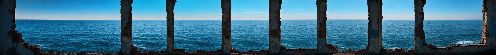
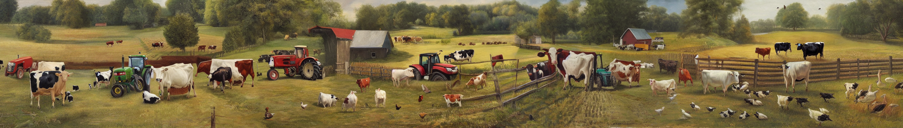
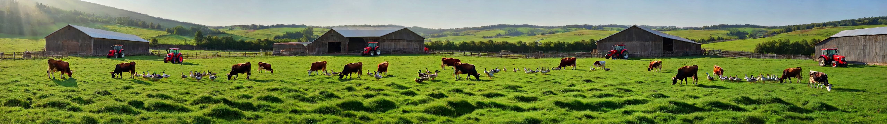
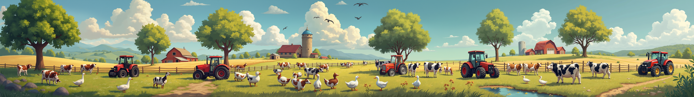

Wide Image Generation


“A farm scene with cows, ducks and a tractor”



“In a beautifully rendered papercraft world, a steamboat travels across a vast ocean with wispy clouds... Camera static.”
Spatial coherence 😡 Camera motion 😡
Camera motion 😡
Spatial Coherence 😄 Camera motion 😄
“Flying cars zoom through a futuristic cityscape, maneuvering around towering skyscrapers... Camera static.”
Spatial Coherence 😡 Camera motion 😡
Spatial Coherence 😡 Camera motion 😡
Spatial Coherence 😄 Camera motion 😄
“Autumn leaves falling through a wide forest clearing, red and gold foliage drifting down in endless flurries... Camera static.”
Flickering 😡
Low dynamic 😡
Flickering (initial frames) 😡
No flickering 😄, Seamless dynamic 😄
“Elegantly dressed dancers glide across the polished floor of a grand ballroom... Camera static.”
Camera motion 😡 Flickering (late frames) 😡
Low dynamic 😡
Camera motion 😡
No camera motion 😄 Seamless dynamic 😄
Inaccurate trajectory and size 😡
Rigid and unnature motion 😡
accurate trajectory and size 😄 nature motion 😄